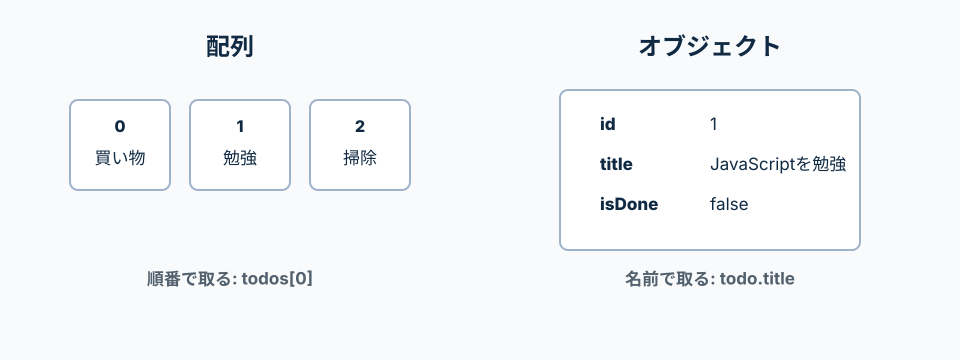

Todo、カテゴリ、ユーザー情報などを扱うための基本。
配列のmapは新しい配列を作る。filterは条件に合う要素だけを残す。findは条件に合う最初の要素を返す。
ReactでもLaravel APIの返却データでも、配列とオブジェクトを読む力が重要。
配列は[]で囲む。オブジェクトは{}で囲む。
配列は「順番で並んだデータ」、オブジェクトは「名前付きでまとまったデータ」。
APIから返ってくるTodo一覧は、配列の中にオブジェクトが入っている形が多い。

['買い物', '勉強']
[] で囲むと配列
複数の値を順番に並べる。最初は0番。
{ title: 'Todo' }
{} で囲むとオブジェクト
名前と値をセットで持つ。
{ id: 1, title: 'Todo' }
, で区切る
配列の値同士、オブジェクトの項目同士はカンマで区切る。
title: 'Todo'
: は名前と値の区切り
titleという名前に'Todo'という値を入れている。
配列は[]で複数の値をまとめるもの。
0番目から数えるので、最初の値はtodos[0]で取る。
const todos = ['買い物', '勉強', '掃除'];
console.log(todos[0]);
console.log(todos.length);
todos[0]
配列の最初の値を取る。JavaScriptの配列は0番から始まる。
todos.length
配列に何件入っているかを数える。
オブジェクトは{}で名前付きの情報をまとめるもの。
todo.titleのように、ドットで中身を取り出す。
const todo = {
id: 1,
title: 'JavaScriptを勉強する',
isDone: false,
};
console.log(todo.id);
console.log(todo.title);
console.log(todo.isDone);
id: 1
idという名前に1という値を入れている。
todo.title
todoオブジェクトの中からtitleを取り出す。
isDone: false
完了しているかどうかをtrue/falseで持っている。
APIから返ってくるデータは、この形が多い。
複数のTodoを配列で持ち、1件ずつのTodoをオブジェクトで表す。
const todos = [
{
id: 1,
title: 'JavaScriptを勉強する',
isDone: false,
},
{
id: 2,
title: 'Laravel APIを作る',
isDone: true,
},
];
console.log(todos[0].title);
mapは、配列の1件ずつを別の形に変えて、新しい配列を作る。
Reactの一覧表示でもよく使う。
todoは自分で外から渡しているのではなく、mapが1件ずつ渡している。
const todos = [
{ id: 1, title: 'JavaScriptを勉強する' },
{ id: 2, title: 'Laravel APIを作る' },
];
const titles = todos.map((todo) => {
return todo.title;
});
console.log(titles);
todos.map(...)
todosの中身を1件ずつ見て、新しい配列を作る。
(todo) => { ... }
mapから渡される1件分のTodoを、todoという名前で受け取り、処理する。
return todo.title;
1件分のTodoからtitleだけを取り出して、新しい配列に入れる。
配列メソッドに渡した関数は、JavaScriptが配列の中身を1件ずつ渡しながら呼ぶ。
todo、item、categoryのような名前は自分で決めてよい。
| todos.map((todo) => ...) | mapがtodosの中身を1件ずつtodoとして渡す。戻り値を集めて新しい配列を作る。 |
|---|---|
| todos.filter((todo) => ...) | filterがtodosの中身を1件ずつtodoとして渡す。trueを返したものだけ残す。 |
| todos.find((todo) => ...) | findがtodosの中身を1件ずつtodoとして渡す。最初にtrueになった1件を返す。 |
| cartItems.reduce((total, item) => ...) | reduceは、途中結果のtotalと、1件分のitemを渡す。最後に1つの値へまとめる。 |
filterは、条件がtrueになるものだけを残して、新しい配列を作る。
削除処理や完了済みだけ表示する処理で使う。
const todos = [
{ id: 1, title: 'JavaScriptを勉強する', isDone: false },
{ id: 2, title: 'Laravel APIを作る', isDone: true },
];
const doneTodos = todos.filter((todo) => {
return todo.isDone === true;
});
console.log(doneTodos);
filter
条件に合うものだけ残して、新しい配列を作る。
todo.isDone === true
Todoが完了済みかどうかを確認している。===は値と型が同じかを見る。
findは、条件に合う最初の1件を返す。
idから詳細データを探す時によく使う。
const todos = [
{ id: 1, title: 'JavaScriptを勉強する' },
{ id: 2, title: 'Laravel APIを作る' },
];
const todo = todos.find((todo) => {
return todo.id === 2;
});
console.log(todo);
reduceは、配列を1つの値にまとめる。
合計金額や件数集計で使う。
const cartItems = [
{ id: 1, name: '本', price: 1200 },
{ id: 2, name: 'ノート', price: 300 },
];
const totalPrice = cartItems.reduce((total, item) => {
return total + item.price;
}, 0);
console.log(totalPrice);
...は、中身を展開する書き方。
配列やオブジェクトを直接変更せず、新しい値を作るときに使う。
const todos = [
{ id: 1, title: 'JavaScriptを勉強する' },
];
const newTodo = {
id: 2,
title: 'Reactを勉強する',
};
const nextTodos = [...todos, newTodo];
const user = {
name: '太郎',
email: 'taro@example.com',
};
const nextUser = {
...user,
name: '次郎',
};
console.log(nextTodos);
console.log(nextUser);
[...todos, newTodo]
今あるtodosの中身を展開して、最後にnewTodoを追加した新しい配列を作る。
{ ...user, name: '次郎' }
今あるuserの中身をコピーして、nameだけ新しい値に上書きする。